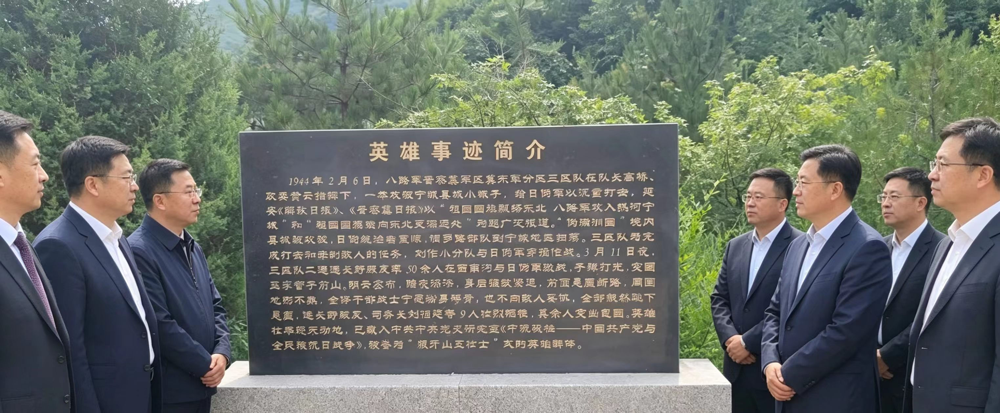

为传承红色基因、弘扬革命精神，深化爱国主义教育，国庆期间，赤峰市启跃文化传媒有限公司受邀参与宁城县工商联组织的“缅怀革命先烈·赓续红色血脉”主题红色教育活动，组织员工前往宁城县革命烈士纪念地，重温革命历史、感悟英雄精神，接受深刻的党性教育与精神洗礼。
本次活动的纪念地，正是为纪念1944年宁城抗日英雄群体而建。1944年3月，八路军晋察冀军区冀东军分区三区队的50余名战士，在宁城县李营子前山遭遇日伪军围堵，面对强敌追击与断崖绝境，9名战士毅然跳崖，用生命诠释了宁死不屈的民族气节，被誉为“狼牙山五壮士”式的英雄群体。纪念广场上，飘扬的“八一”军旗雕塑、“浩气长存”题字、英雄群雕与入党誓词墙，共同诉说着那段浴血奋战的峥嵘岁月，让每一位参与者深受震撼。
在活动现场，启跃传媒的员工们认真聆听英雄事迹讲解，学习宁城抗日英雄群体的革命历程，驻足瞻仰纪念碑、浮雕与英雄事迹简介，深切缅怀革命先烈为民族解放事业抛头颅、洒热血的光辉事迹，重温那段烽火岁月里的忠诚与担当。面对鲜红的党旗，大家深受触动，纷纷表示，要铭记革命历史，传承先烈们不怕牺牲、英勇奋斗的革命精神。
此次红色教育活动，不仅是一次深刻的爱国主义教育，更是一堂生动的企业思政课。赤峰市启跃文化传媒有限公司负责人表示，作为扎根宁城的本土企业，公司始终坚持党建引领，将红色精神融入企业发展与助农事业中。未来，将持续组织此类红色主题教育活动，引导员工从革命精神中汲取奋进力量，以更饱满的热情投入到电商助农、乡村振兴的工作中，用实际行动践行新时代青年企业的责任与担当，为宁城高质量发展贡献更多力量。
